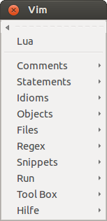
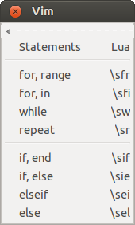
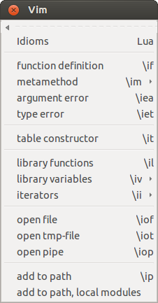
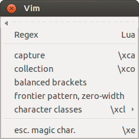
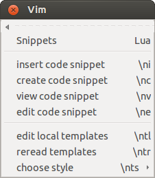
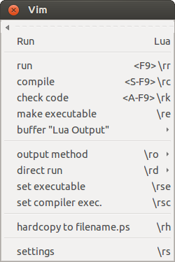
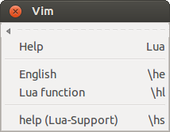

| plug-in overview |
| download vim.org |
| view on GitHub |
| Lua Support – Vim Plug-In | |||||||||
|
|
|
|||||||
|
 root menu |
Lua Support - Vim Plug-In( version 0.9 )View the ReadmeRead the Lua Support Help File |
|
| FEATURES |
|---|
Speed-up the development of Lua scripts:
|
| Menus | Explanation | ||
|---|---|---|---|
 |
Menu Comments : insert commentsA lot of the menu entries are defined in a so-called template library. The library defines the menu entries, maps and the inserted text. The personal information can also be configured there. A file header is automatically inserted into each new file (can be switched off, see :help g:Lua_InsertFileHeader)
--
--------------------------------------------------------------------------------
-- File: somefile.lua
--
-- Usage: ./somefile.lua
--
-- Description:
--
-- Options: ---
-- Requirements: ---
-- Bugs: ---
-- Notes: ---
-- Author: Wolfgang Mehner (WM), <thisguy@doggymail.de>
-- Organization:
-- Version: 1.0
-- Created: 29.05.14
-- Revision: ---
--------------------------------------------------------------------------------
--
Append end-of-line comments to several lines at once: record = { name = '', address = '', mail = '', } Visually select the three lines in the table and use the entry end-of-line comment or the map \cl and get aligned comments, that can also be realigned: record = { name = '', -- | address = '', -- mail = '', -- } Automatically generate a comment documenting a function. The name and parameters are read from the buffer. Place the cursor on the function header and hit \ca: ------------------------------------------------------------------------ -- Name: compare -- Purpose: {+PURPOSE+} -- Description: {+DESCRIPTION+} -- Parameters: thee - {+DESCRIPTION+} ({+TYPE+}) -- summers_day - {+DESCRIPTION+} ({+TYPE+}) -- Returns: {+RETURNS+} ------------------------------------------------------------------------ function compare ( thee, summers_day ) -- something end ----- end of function compare ----- |
||
|  |
Menu Statements : insert statementsInsert statements with jump tags for convenient editing, using the entry if, else or via the map \sie: if | then {-IF_PART-} else {+ELSE_PART+} end The cursor is positioned after the "if". Use CTRL+J to jump to the tags and start editing. A lot of menu entires have a special behavior in visual mode. Select some lines in visual mode ... x = math.sqrt ( y ) print ( x ) then use the entry if, else. The text is inserted around the selected lines and they are indented: if | then x = math.sqrt ( y ) else {+ELSE_PART+} end print ( x ) |
||
|  |
|
||
|  |
|
||
|  |
Menu Snippets : insert code snippets and manage templatesThe plug-in comes with a facility to extract, manage and insert often used code snippets.
Visually select a few lines and use the menu entry create code snippet to write these lines into a file.
The code snippet can then be edited and inserted again using insert code snippet. -- echo command line arguments for idx, val in ipairs ( { ... } ) do print ( idx, val ) end (See :help luasupport-usage-snippets) The templates which define the behavior of most of the menu entries are also manage here. Use templates setup wizard to create a personalization file with your personal details for the comments. The templates support different coding styles, which are used here to support Lua 5.1, 5.2 and 5.3. Use the entry choose style to switch between them. |
||
|  |
|
||
|  |
Menu Help : call helpHelp is quickly accessible through the Help menu. Place the cursor on the name of a standard function ...
string.gsub ( str, "%d+", repl_f )
then use the entry or the map \hl and the browser will open with a URL like: http://www.lua.org/manual/5.2/manual.html#pdf-string.gsub The same works for any word in the English language. Placing the cursor on a word and hitting \he opens a dictionary for the word. |
||
 |
Toolbox Make : make integrationRun make in the current directory, passing cmd.-line arguments: :Make -j3 In larger projects a specific makefile can be chosen: :MakeFile ../Makefile ... and run from anywhere: :Make doc The tool will change the directory and execute the previously chosen makefile, independently of the current working directory. |
Page updated: March 13 2016 / Mail to: Wolfgang Mehner
{kind=link}